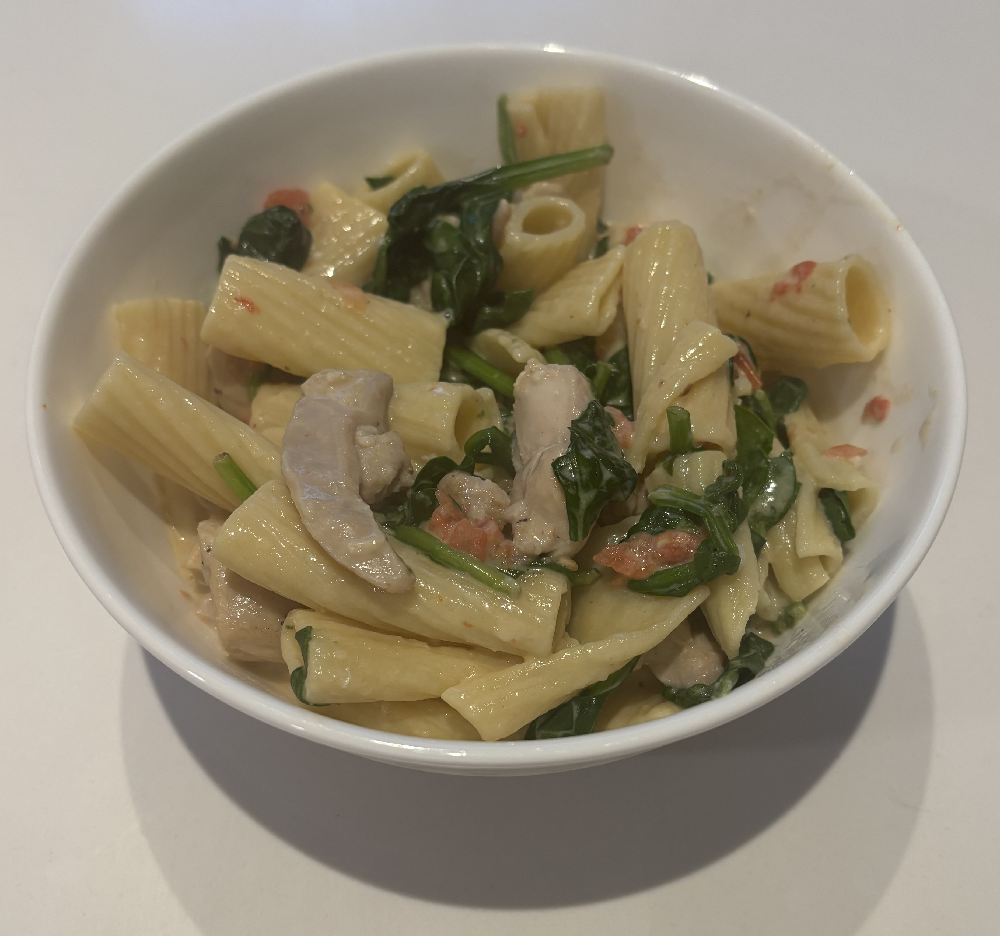

Home
Creamy Tuscan Chicken Pasta

Ingredients
- 1 lb rigatoni
- 2 lb cubbed boneless skinless chicken breast
- 1 tbsp italian seaoning
- 1/2 tbsp crushed red pepper flakes
- 2 cloves minced garlic
- 3 cups fresh baby spinach
- 2 cups halved grape tomatoes
- 1 pinch ground nutmeg
- 1 1/2 cups heavy cream
- 1/2 cup grated parmesan cheese
- vegetable oil
- salt and pepper
Steps
- Bring a large pot of water to boil, add salt. Add the rigatoni and cook unti al dente according to the package instructions about 10-12 min
- Meanwhile season chicken with salt and pepper
- Heat the vegetable oil in a large pan. Once melted, cook the chicken over medium high heat for about 4-5 min
- Reduce the heat to medium. Then add garlic, tomatoes, italian seasoning, ground nutmeg, and crushed red pepper flakes. Add the heavy cream and let it come to a simmer for 1-2 min
- Remove from heat and add the grated parmesan cheese and more salt and pepper if needed.